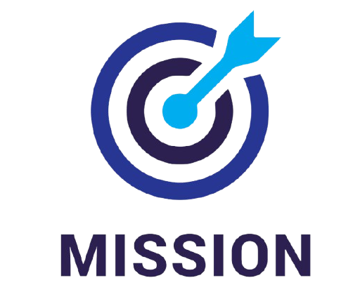

.png)
À propos de moi
Bejaoui Fedi
Etudiant en Réseaux Internet des Objets
Passionné par l'innovation technologique et la durabilité, je combine mes compétences en systèmes embarqués et en IoT pour développer des solutions numériques visant à optimiser la gestion des cultures et prévenir les maladies des céréales. Mon objectif est d'aider les agriculteurs à prendre des décisions éclairées et à promouvoir une agriculture intelligente et durable.
Qui Sommes Nous
Nous sommes une équipe passionnée par l'innovation dans le domaine de l'agriculture et des technologies. Notre objectif est de fournir des solutions diagnostiques précises pour aider les producteurs à mieux gérer leurs cultures et à lutter contre les maladies des céréales.
Notre Mission

Nous nous engageons à révolutionner la manière dont les agriculteurs diagnostiquent et traitent les maladies des céréales. Grâce à notre expertise, nous offrons des outils simples et efficaces qui améliorent la productivité et la qualité des récoltes.
Notre Vision
Nous aspirons à devenir un leader dans la technologie agricole en offrant des solutions innovantes pour la gestion des maladies des plantes et en contribuant à un avenir agricole durable.